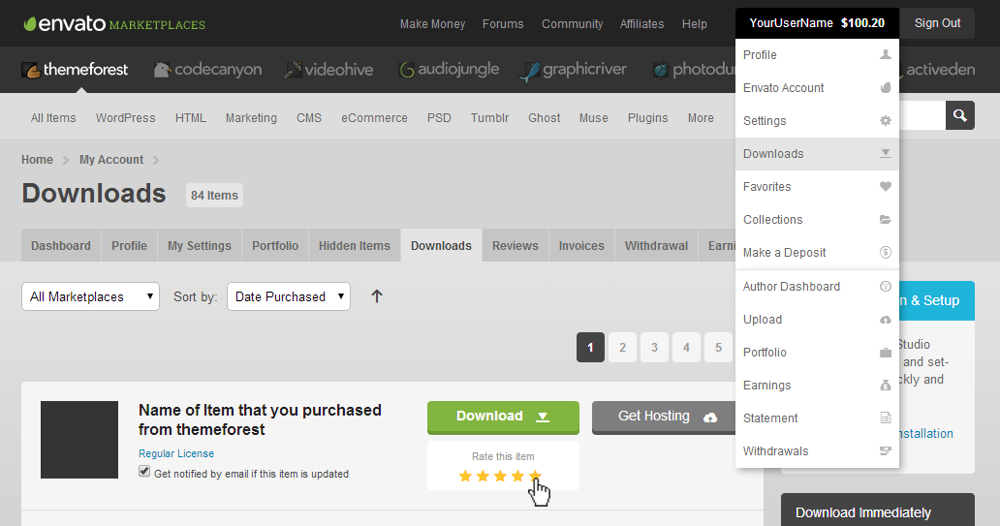

Getting Started
Introduction
This documentation is last updated on 10th June, 2021.
Thank you for purchasing MedicalPress WordPress Theme. If you have any question that is beyond the scope of this documentation, Please signup to our support website and ask your question over there. You can visit this knowledge base article to learn about how to get item purchase code from themeforest to signup on our support site.
!!! info "Important Note" It is highly recommended to use child theme for code level modifications, So that you can easily update parent theme without losing your own changes whenever a new update becomes available. A pre-built ready to use child theme is included in the main theme pack that you might have downloaded from themeforest.
!!! warning "Disclaimer" We offer limited support for theme customers. We only provide support for our themes and their core features. We cannot guarantee our themes will work properly with all third party plugins and server environments. If you plan on adding numerous plugins to this theme then please note, We cannot facilitate support for any conflicts that might arise with this theme's default functionality. The MedicalPress WordPress theme is presented as it is.
Updating WordPress Theme
If you want to update the theme automatically, you can consult this knowledge base article or for manual theme update, you can consult this knowledge base article.
If you like this theme, please support us by rating this theme with 5 stars. ★★★★★
